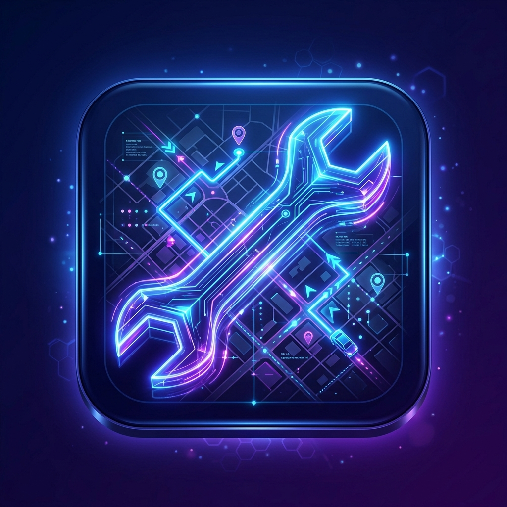

An integrated role-based system connecting stranded drivers, verified mechanics, and operational admins in a real-time dispatch and tracking network.

The Layman Analogy: Think of traditional roadside assistance like sending a physical letter to call for a delivery. Drivers must call a center, explain their issue, wait for calls back, and guess when help arrives.
The PitCrew Connect Solution: Instead of slow brokers, PitCrew Connect acts as a real-time dispatcher. It instantly coordinates breakdown positions with available mechanic dashboards, tracking routing live.
Stranded drivers rely on physical directories and calling telephone hotlines for flatbed trucks.
Garages host static web catalogs. Drivers call businesses individually to request local quotes.
Centralized dispatch portals connect garages, but coordinate manually, leading to dispatch lag.
PitCrew Connect launches: Instant role-based intake, background identity checks, and real-time mapping.
Click on any layer of the platform blueprint schematic to inspect its functional scope, data role, and implementation technologies.
Description details go here.
Observe how data packets flow across the network based on the four system dispatch operations.
Average dispatch-to-arrival time comparison (measured in minutes).
2.4 Minutes
100% Identity Vetted
< 150ms
99.98%
Mechanics submit business details, mechanic certifications, and driver licenses during registration.
Ops admins review document credentials via the secure operations review panel before activation.
Vetted profiles enter the live matching pool, unlocking route coordinate access and dispatches.
Role isolation prevents mechanics from accessing user lists, and keeps user databases secure.